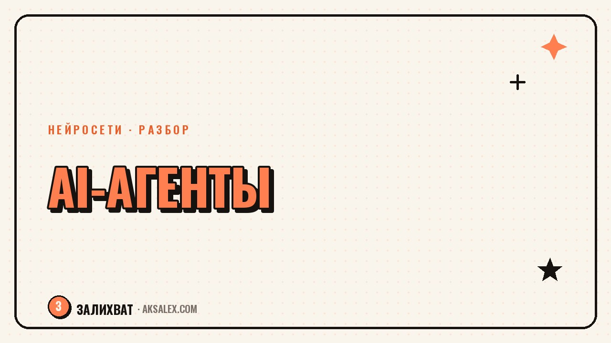

AI-агенты для блога: что это и как их приручить

Про AI-агентов сейчас говорят так, будто у каждого блогера уже есть цифровой ассистент, который сам ведёт соцсети. На деле разница между агентом и обычным чат-ботом не в громком названии, а в том, что агент умеет делать несколько шагов подряд без твоей команды на каждый из них. Разберём, что это значит на практике, какие задачи блогера агент реально снимает, а где за ним всё равно нужно перепроверять.
Чем агент отличается от обычного чат-бота
Чат-бот отвечает на один твой запрос и ждёт следующий. Агент получает цель и сам разбивает её на шаги: находит информацию, сравнивает варианты, выполняет действие в другом сервисе и отчитывается о результате. Ты формулируешь задачу один раз, а не диктуешь каждый шаг вручную.
У блогера это выглядит так: вместо просьбы «напиши подпись к посту» агенту можно поставить задачу «собери черновик подписи, три варианта хука и подбери три хэштега под тему поста» - и он сам пройдёт по этим шагам подряд.
Какие задачи блогера агенты закрывают уже сейчас
| Задача | Что делает агент | Нужна ли твоя проверка |
|---|---|---|
| Сбор идей для постов | Ищет темы по нише, группирует по рубрикам | Да, отсеять неактуальное |
| Черновик текста | Пишет пост или сценарий по брифу | Да, сверить факты и голос |
| Мониторинг трендов | Отслеживает популярные темы и форматы | Частично, оценить релевантность |
| Ответы на частые вопросы | Отвечает в директ по заданным сценариям | Да, на нестандартные вопросы |
| Расписание публикаций | Ставит посты в очередь по календарю | Минимально, проверить порядок |
Как поставить агенту задачу, чтобы получить рабочий результат
Формулируй цель, а не пошаговую инструкцию
Агент теряет преимущество, если ты расписываешь ему каждый шаг сама - тогда это обычный чат-бот с лишними словами в запросе. Дай конечную цель и ограничения, а шаги пусть выбирает сам.
- Опиши результат: что должно получиться на выходе, в каком формате
- Задай рамки: тон, длину, что нельзя упоминать
- Укажи источник данных, если задача связана с фактами о твоей нише
- Попроси показать промежуточные шаги, а не только финальный ответ
- Проверь результат перед публикацией - агент не несёт ответственности за ошибку
Агент экономит время на рутине между идеей и черновиком. Решение о том, что публиковать под своим именем, всё равно остаётся за тобой.
Где агентам пока рано доверять без контроля
Агенты неплохо собирают черновики, но плохо чувствуют контекст твоих отношений с аудиторией. Личный тон, шутки, которые заходят именно твоим подписчикам, реакция на конкретную ситуацию в комментариях - это агент имитирует, а не понимает. Отдавать такие задачи целиком рискованно: результат может звучать правильно по форме и неуместно по сути.
Отдельная зона риска - автоматические ответы клиентам или покупателям без проверки. Если агент по ошибке пообещает то, чего у тебя нет, разбираться с этим придётся тебе, а не алгоритму.
С чего начать, если хочешь попробовать агента
Не начинай с полной автоматизации блога. Отдай агенту одну повторяющуюся задачу - например, сбор идей для постов раз в неделю - и посмотри на результат месяц. Если качество стабильное, добавь вторую задачу. Такой постепенный подход показывает, где агент реально экономит время, а где создаёт больше работы, чем экономит.
- Выбери одну рутинную задачу для старта
- Задай агенту чёткие рамки и формат результата
- Проверяй результат минимум месяц, прежде чем расширять зону ответственности
- Фиксируй, сколько времени реально освободилось
Частые вопросы
Нужно ли программировать, чтобы настроить AI-агента для блога?
Нет, большинство современных агентов настраиваются текстовым описанием задачи в обычном интерфейсе, без кода. Программирование нужно только для сложных связок с внешними сервисами.
Может ли агент полностью заменить SMM-специалиста?
Нет, агент закрывает рутину и черновики, но стратегию, тон бренда и реакцию на живую ситуацию всё ещё определяет человек. Заменить эти решения агент не может.
Безопасно ли давать агенту доступ к своим соцсетям?
Только с ограниченными правами и под контролем. Давай доступ к конкретным действиям, а не полный доступ к аккаунту, и регулярно проверяй, что агент публикует от твоего имени.
Чем агент отличается от автоматизации через готовые сценарии?
Готовый сценарий выполняет фиксированную последовательность действий. Агент сам решает, какие шаги нужны для цели, и может менять порядок в зависимости от промежуточного результата.
Стоит ли доверять агенту общение с подписчиками в директе?
Для типовых вопросов - да, если заранее задать сценарии ответов. Для нестандартных обращений и конфликтных ситуаций лучше, чтобы отвечал живой человек.
Раз тема оказалась полезной, вот что почитать следующим. Как собрать понятную инфографику для блога с помощью нейросетей и не запутать читателя цифрами.
Читать статью →а не вручную